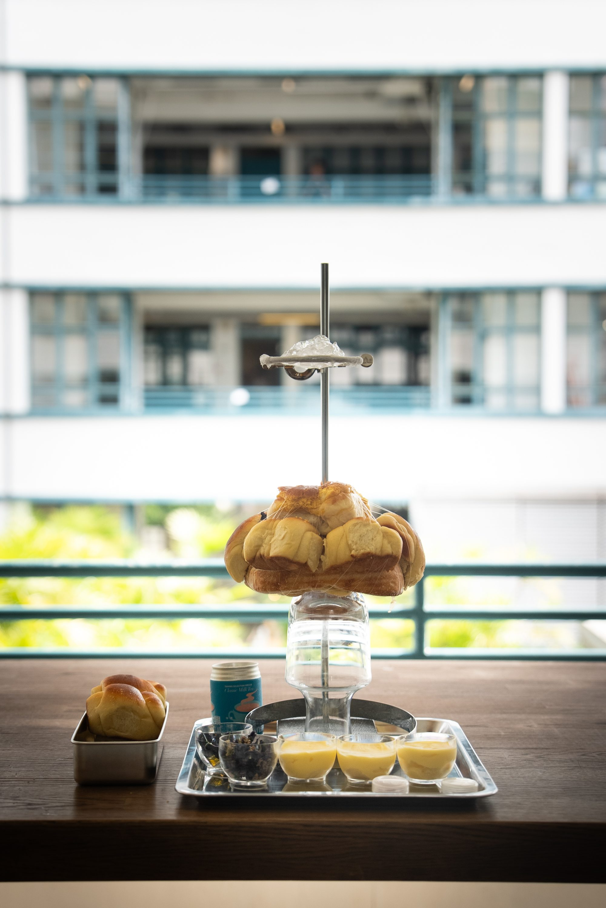

Heeju Kim is an independent curator and interdisciplinary artist based in Seoul. Her practice explores the boundaries of visual art through the intersection of the visual, auditory, and tactile. She is the initiator of the ORTOTATTILE series (2023-ongoing), a participatory food-art performance project investigating sensory perception, collective rituals, and the politics of visibility.
金喜珠是首爾為據點的獨立策展人與跨領域藝術家，從視覺、聽覺與觸覺的交匯處探索視覺藝術的邊界。ORTOTATTILE 系列（2023–）是一個透過食物、觸覺與表演，探討感官知覺、集體儀式與可見性政治的參與式計畫。
서울을 기반으로 활동하는 김희주는 시각-청각-촉각의 교차점에서 시각 예술의 경계를 탐구하는 독립 큐레이터이자 다학제 예술가다. 인간과 비인간의 구분을 넘어 진동을 통한 대안적 공명을 그려내는 〈Ground of Vibration〉(2024), 〈Ground of Vibration: Aqueous Layer〉(2024)를 선보였으며, 20세기 초 이탈리아 미래주의 레시피를 자신의 포뮬라로 재해석한 참여형 퍼포먼스 워크숍 〈ORTOTATTILE〉(2023)를 통해 다중 감각 인식을 제안했다. 이 프로젝트는 〈ORTOTATTILE II: Baguette of Solidarities〉(2024)로 확장되며, 바게트 단면의 기공을 채운 재료의 밀도를 매개로 민주 사회에서의 연대와 집단적 목소리를 탐구하는 실험으로 이어졌으며, 〈ORTOTATTILE IV: (non-)transparent catering〉(2025)은 케이터링의 프레임을 통해 미술관 시스템, 제도적 노동, 그리고 그 형식 안에 내재된 이중성을 들여다본다.
© 2026 Heeju Kim. All Rights Reserved.
〈오르또따띨레 VI: 바오 브레드 바오〉
《ORTOTATTILE》(이탈리아어로 ‘촉각 정원’을 의미함)는 시각 중심주의가 지배하는 감각의 위계를 해체하고, 촉각과 청각이 교차하는 비시각적 감각의 밀도를 구축해 온 시리즈이다. 이 시리즈는 누가 무엇을 감각할 수 있는가를 결정하는 권력의 분배, 즉 감각의 나눔(le partage du sensible)¹에 개입하며, 시각에 종속되어 온 감각들을 전면으로 호출한다. 서구의 인식론적 전통이 오랫동안 촉각을 시각의 하위에 배치해 왔다면,² 《ORTOTATTILE》는 그 위계를 단순히 뒤집는 것이 아니라 위계 자체를 무화시키려는 반복적 실천이다.
참여형 푸드 아트 퍼포먼스 워크샵 《ORTOTATTILE》 시리즈의 첫 번째부터 다섯 번째까지의 작업³이 사전 등록된 참여자들과의 폐쇄적 워크샵 형식으로 진행되었다면, 〈ORTOTATTILE VI: Bao Bread Bao〉는 홍콩 센트럴 PMQ 인근의 계단에서 거리를 지나는 모든 이를 참여자로 초대하는 게릴라적 퍼포먼스 워크샵으로 전개된다. 작업의 장소는 단순한 배경이 아니다. 계단은 목적지가 아니라 통과를 위해 설계된 공간이다. 수많은 사람들이 오가지만 서로를 기억하지 않는 이 이동의 인프라는 마르크 오제가 말한 비장소(non-lieu)의 조건을 부분적으로 드러낸다.⁴ 습기와 열기가 켜켜이 쌓이는 홍콩 센트럴의 계단은 해수면에서 도시의 층위를 오르내리는 수직적 이동의 공간이자 끊임없는 순환의 회로이다. 이 작업은 바로 그 비장소적 공간에 잠시 멈춤을 삽입한다. 제도적 공간의 논리에 균열을 내는 일상적 전술로서,⁵ 지나가던 사람들이 잠시 멈추고 낯선 이들과 함께 빵을 만지는 순간, 익명의 통과 공간 안에는 일시적인 촉각의 정원이 발생한다.
이번 작업의 중심 재료는 바오빵(包)과 버터이다. 한자 ‘包’는 ‘감싸다’, ‘품다’, ‘포용하다’를 뜻하며, 그 어원은 아이를 안고 있는 사람의 형상에서 유래한다. 홍콩의 대표적 로컬 페이스트리인 보로바오(菠蘿包)는 이러한 ‘감쌈’의 역사를 물질적으로 체현한다. 그것은 영국 식민 통치하의 서양 제빵 문화, 광둥의 전통 식문화, 그리고 멕시코·일본 등 복수의 문화적 경로가 교차하며 형성된 혼종적 산물이다.⁶ 단일한 문화적 계보로 환원될 수 없는 이 빵은 홍콩이라는 도시가 지닌 역사적 조건을 압축적으로 드러낸다. 문화적 정체성은 본질적 기원이 아니라 과거와 현재 사이에서 끊임없이 협상되는 과정이며,⁷ 보로바오는 그 협상의 물질적 흔적이라 할 수 있다.⁸
설치는 하나의 완결된 구조물로서 퍼포먼스에 앞서 장소에 자리한다. 금속 스탠드 위에는 서양 사워도우빵을 보로바오로 감싸 고정한 빵들이 군집을 이루며 놓여 있다. 사워도우를 보로바오로 묶는 와이어는 손이 닿는 순간 전자기타의 현처럼 진동하며 소리를 발생시킨다. 빵들 위로는 면보에 얹힌 얼음 조각이 자리한다. 작가는 얼음 위에 한국산 때죽꿀·밤꽃꿀·밤알룰로스, 이탈리아산 올리브오일, 그리스산 발사믹식초를 스포이드로 천천히 떨어뜨린다. 얼음이 녹으면서 액체들은 함께 흘러내려 빵의 표면과 내부로 스며든다. 그 흐름은 작가가 통제할 수 없다. 얼마나 빨리 녹는지, 어느 방향으로 흘러가는지, 어느 빵에 더 깊이 침투하는지는 모두 그날의 기온과 습도, 중력에 의해 결정된다. 계단이라는 수직적 공간에서 위에서 아래로 흘러내리는 이 구조는 홍콩 센트럴의 지형적 층위를 퍼포먼스의 물리적 원리로 끌어들인다. 서로 다른 기원을 가진 재료들이 녹아 섞이며 빵 안으로 스며드는 과정은 혼종성이 선언되는 것이 아니라 물질적으로 발생하는 사건임을 보여준다.
워크샵에서 참여자들은 어떠한 도구도 사용하지 않는다. 위생 장갑만을 착용한 손으로 바오빵 위에 버터를 바르고, 드라이 방울토마토·드라이 금귤·검은 화산 소금·레드 페퍼·말린 식용꽃 등의 재료로 빵을 함께 장식한다. 이 행위는 홍콩의 대표적 간식인 보로야우(菠蘿油)⁹에서 출발한다. 보로야우에서 차가운 버터는 뜨거운 보로바오 안으로 삽입되어 서서히 녹아 스며든다. 이 작업에서도 유(油)는 얼음의 해빙과 함께 빵의 표면과 내부를 가로질러 이동한다. 버터와 올리브오일, 꿀과 식초는 서로 다른 기원을 지닌 물질들을 연결하고 침투시키는 매개가 된다. 다만 여기서 버터는 더 이상 빵 속에 삽입되지 않는다. 그것은 빵의 표면 위로 펼쳐지고 공유되며, 빵을 감싸는(包) 행위는 공동의 식탁을 준비하는 제의적 제스처로 전환된다. 손은 단순히 만지는 것이 아니라 역사의 표면을 더듬는다. 도구의 부재는 피부와 재료 사이의 직접성을 요구하며, 그 직접성 안에서 손은 단순한 수단이 아니라 감각하는 주체가 된다.
〈ORTOTATTILE VI: Bao Bread Bao〉는 이동을 위해 조직된 공간 안에 일시적인 장소성을 발생시키는 《ORTOTATTILE》 시리즈의 여섯 번째 정원이다. 홍콩의 계단 위에서 얼음은 녹아내리고, 액체는 흘러 스며들며, 낯선 이들의 손은 하나의 빵 위에서 만나 흔적을 남긴다. 누군가는 만지고, 누군가는 듣고, 누군가는 그 둘 사이를 오간다. 그렇게 이 작업은 감각을 개인의 소유가 아니라 함께 만들어지는 경험으로 전환한다.
빵이 소비되고 얼음이 모두 녹아 사라진 뒤에도 남는 것은 완성된 형태가 아니다. 그것은 잠시 한 공간과 시간, 그리고 여러 몸들이 서로를 통과하며 남긴 흔적이다. 비장소적 공간 안에 잠시 생성되었다가 사라지는 이 감각적 공동체는 감각이란 본래 혼자만의 것이 아니라 타인과의 접촉 속에서 형성되는 것임을 드러낸다. 包. 감싸다. 품다. 포용하다. 이 작업에서 감싸는 것은 빵이 아니라 관계이며, 품어지는 것은 재료가 아니라 타인의 감각이다.
(글 김희주)

ORTOTATTILE VI: Bao Bread Bao,
2026.
Hong Kong
© Heeju Kim. Photo: Natalie Holam.